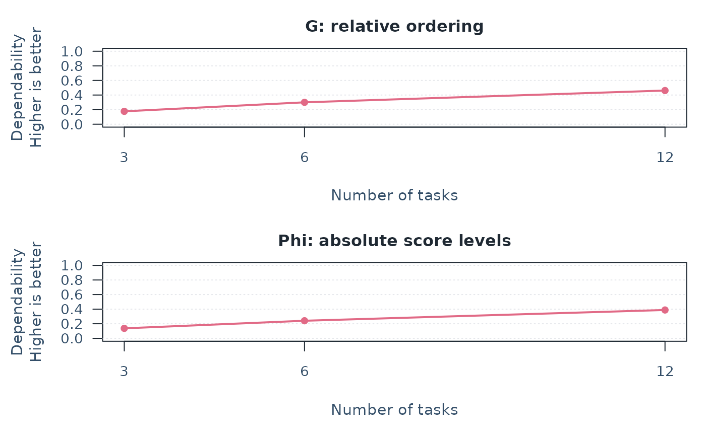
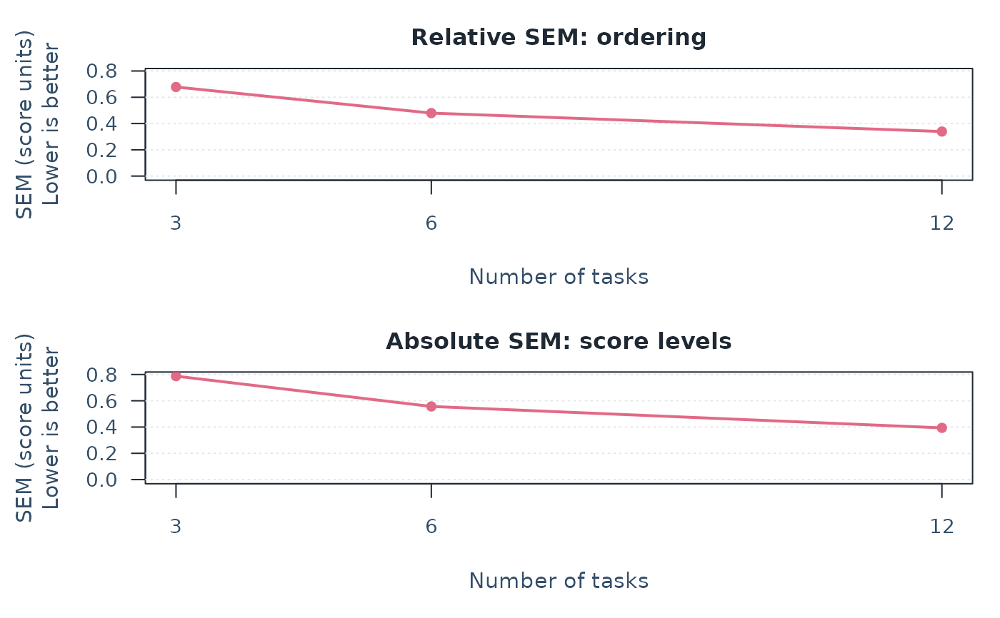
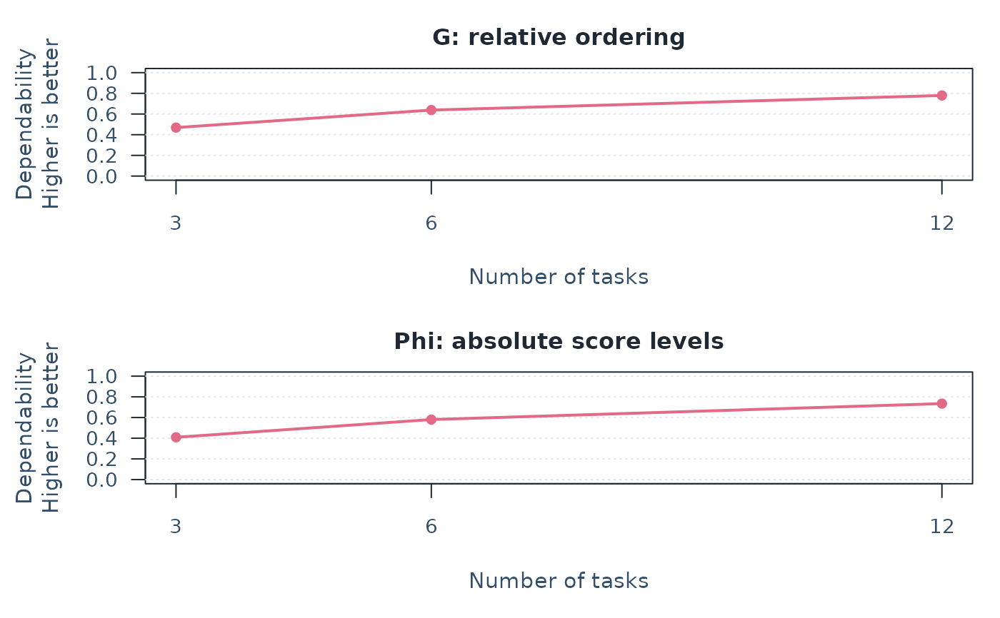
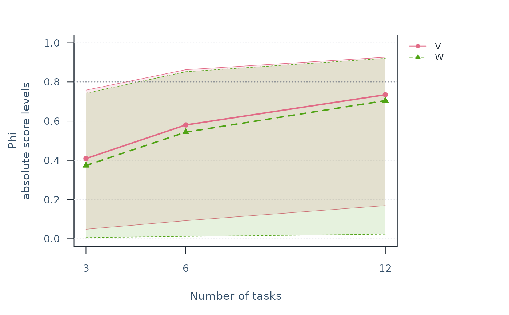
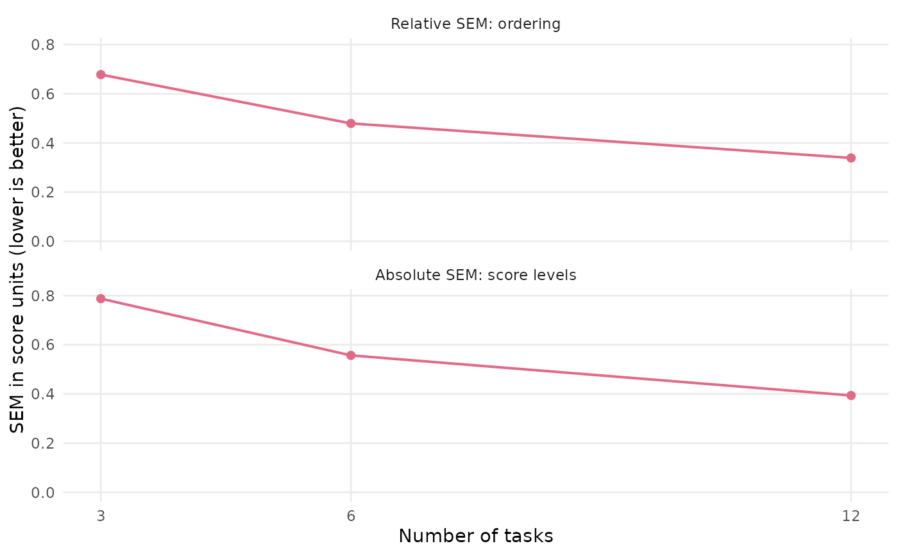
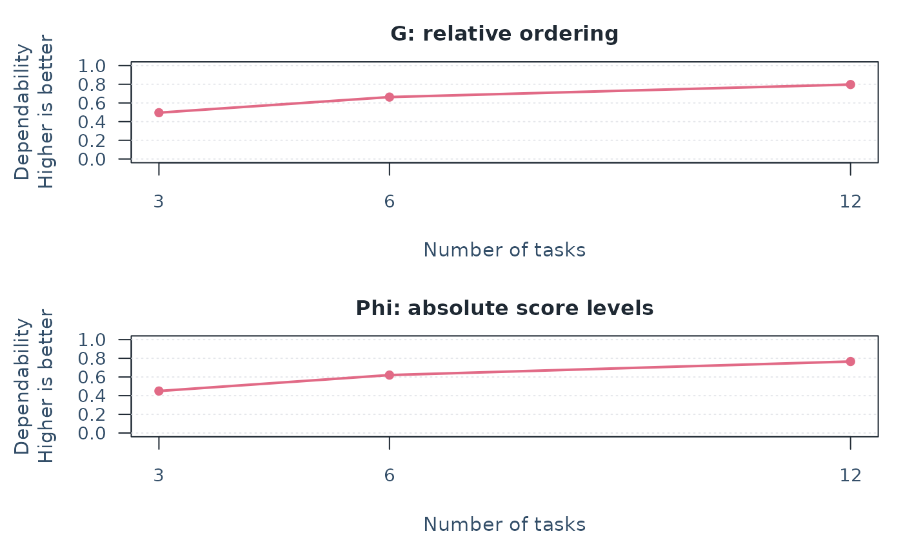
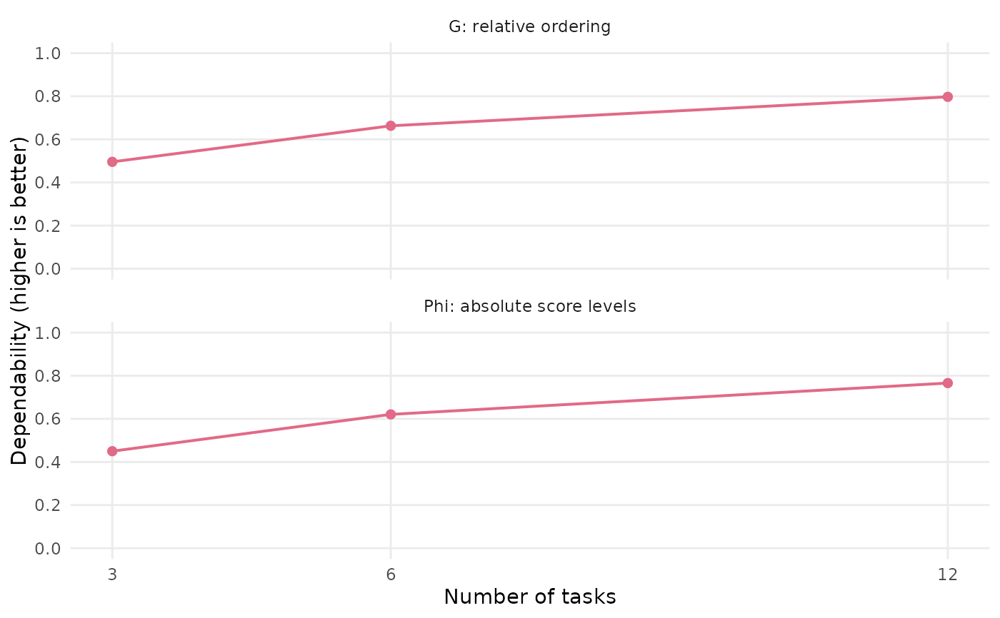
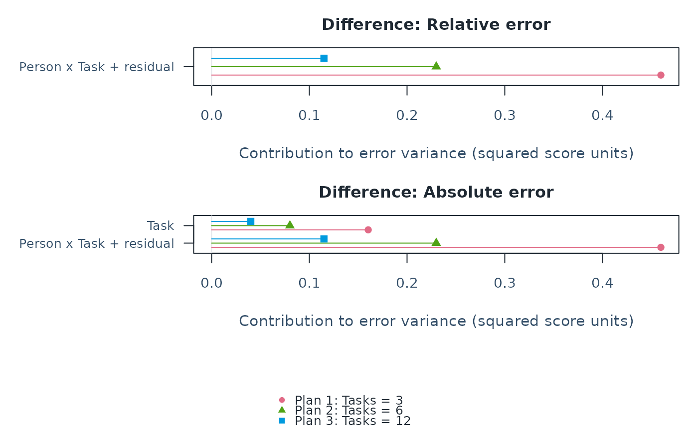

Compare measurement-condition counts in a multivariate D-study
Source:R/api-plotting-multivariate-d-study.R
plot.mfrm_multivariate_d_study.RdSee how a planned change in the number of tasks, raters, or other conditions affects the
dependability of a mean score. Plot an existing D-study result; no model
is refitted. Start with plot(d) for G and Phi, then use
plot(d, type = "sem") to examine error in score units. If the result has
several composites, select them explicitly with composite.
Usage
# S3 method for class 'mfrm_multivariate_d_study'
plot(
x,
type = c("coefficients", "sem", "error_components"),
score = NULL,
x_var = NULL,
draw = TRUE,
preset = "standard",
composite = NULL,
metric = NULL,
reference = NULL,
panel_by = NULL,
ncol = NULL,
intervals = FALSE,
assumption = NULL,
method = "auto",
level = 0.95,
...
)Arguments
- x
A result from
mfrm_d_study().- type
"coefficients"shows G and Phi in separate panels;"sem"shows relative and absolute standard errors of measurement;"error_components"shows each source's contribution to planned error variance, with separate panels for selected scores and error definitions.- score
One or more distinct original score names, in legend order. An explicit name always selects an original score, even if a composite has the same name. If both
scoreandcompositeareNULL, select the sole composite, or the first score when there are no composites. Several composites require an explicit selection.plot_data()identifies the selection and composite weights; a suggested title is returned rather than drawn on the figure.- x_var
A count column in
x$design_grid:"Tasks"/"Raters"for the task/rater interface, or a facet label supplied throughfacets. By default use the last varying count column, or the last column if none varies. A one-facet result permits only its included facet. Each line holds the other facet count constant.- draw
Draw the plot when
TRUE;FALSEonly returns its data.- preset
Plot style:
"standard","publication","compact", or"monochrome". The first three use distinct curve colors; monochrome uses one dark color. Point shapes and line types also distinguish curves. An explicit preset overridesoptions(mfrmr.plot_preset = ...).as_ggplot()retains colors saved in a plot payload.- composite
One or more distinct composite names from
x$coefficients, as defined by a weight-matrix column, or"Composite"for vector weights. Supply eitherscoreorcomposite, not both.- metric
Optional single metric compatible with
type:"G"or"Phi"for coefficients;"RelativeSEM"or"AbsoluteSEM"for SEM. For error components, select"RelativeErrorVariance"or"AbsoluteErrorVariance".NULLshows both metrics in separate panels.- reference
Optional numeric reference values: between 0 and 1 for coefficients, nonnegative for SEM.
NULLdraws no reference lines. The same values apply to each panel. These are user-chosen guides, not universal acceptance rules or confidence bounds.- panel_by
Optional non-horizontal count column in
x$design_grid, such as"Raters"whenx_var = "Tasks". Each count gets a separate panel; selected scores/composites keep the same color, line type and point shape across panels.NULLretains the overlaid curves.- ncol
Optional positive integer number of panel columns. Requires
panel_byfor curves; by default use up to two columns. Error-component plots use one column by default and do not usepanel_by. With both curve metrics selected, panels run through all counts for the first metric, then the second.- intervals
FALSE(default) draws point curves.TRUEcomputes intervals and adds ribbons in one call; also specifyassumption = "normal"and select onemetric:"G","Phi", or, withtype = "sem","RelativeSEM"or"AbsoluteSEM". Alternatively, supply a savedconfint(x)result, or a list with one result per selected score/composite, to avoid recalculation. Saved results must use one method/level and match the source, weights and design grid; retain unavailable rows.NULLis equivalent toFALSE. Useplot(ci)separately to compare several interval methods.- assumption
With
intervals = TRUE, explicitly specify"normal"for independent normal random effects; this assumption is not tested.- method
With
intervals = TRUE, the interval method passed toconfint.mfrm_multivariate_d_study()."auto"selects exact F for one-facet G and generalized CI for one-facet Phi, also for nested plans with source child counts per parent unchanged. For two crossed random facets,"auto"selects approximate"mls"null inversion for G/Phi. Undefined MLS widths are conservatively retained and flagged in the saved interval result. For alternatives or changed nested child counts, select"approximate_f"or"mean_square_region". For SEM,"auto"uses"mls"for supported balanced crossed/nested sources: chi-square for a single mean square, Graybill-Wang for positive sums, Ting for signed sums. Two-facet SEM also accepts"mean_square_region"for conservative normal-model intervals."reml_profile"explicitly fits approximate G/Phi intervals for balanced or identifiable incomplete sources; lme4 and minqa are required for fitting. It preserves the original curve points and reports separate REML estimates in the saved intervals. Its finite-sample/boundary coverage is not guaranteed. For one-facetRelativeSEM, explicit"residual_contrast"accepts retained ANOVA/MINQUE ratings, including incomplete sources. It transforms a residual chi-square interval without likelihood fitting, retaining original curve points and a separate projected center in the saved table. For one-facet G, explicit"spectral_f"accepts retained ANOVA/MINQUE ratings, including incomplete sources, using a normal-model variance-ratio F pivot. It keeps the original points; sparse sources can yield wide bands. Balanced crossed G also accepts explicit"score", an experimental extended-nuisance score interval calculated from stored mean squares. It preserves the source points; empty sets and numerical failures remain missing ribbon segments, with their reasons in the saved interval object. No method is silently substituted after failure.- level
Confidence level for
intervals = TRUE, default 0.95.- ...
Reserved for future use; additional arguments are rejected.
Value
Invisibly, an mfrm_plot_data object. Use plot_data() to extract
table (the selected scores/composites), series (one row per scenario and
plotted metric, including missing values), unavailable, design_grid,
weights, score identity, axis/group names, labels, component_note,
and legend settings. In series, Status is specific to Metric;
table retains the original row status and metric-specific columns.
weights contains a named vector for one composite, a named matrix for
several composites, or NULL for original scores. reference_lines and
notes retain the chosen guides and their interpretation. When panel_by
is supplied, panels maps series$Panel to its metric, count and label;
ncol records the resolved layout for base and ggplot rendering.
With intervals, series also retains Lower, Upper, IntervalStatus,
IntervalAvailable and IntervalRun (connected ribbon segments).
intervals retains the complete input objects, including diagnostics;
unavailable_intervals retains missing bounds separately from missing
point estimates. Save the complete plot object with saveRDS() to replay.
For "error_components", table and series contain the same long
contribution table: Source, planned Multiplier, projected
ComponentVariance, Contribution, DiagonalContribution and
CovarianceContribution. The latter two separate within-score variance
and cross-score covariance terms; they sum to Contribution.
TotalErrorVariance and SEMStatus retain the planned total and its
availability; totals retains all original D-study metrics and statuses
for selected scores. panels, legend, weights, design_grid,
component_diagnostics and notes preserve the interpretation.
as_ggplot() preserves these comparisons for editing or export with
the optional ggplot2 package; for example, as_ggplot(d, type = "sem").
Details
G describes consistency of relative ordering: for example, ranking examinees. Phi also includes shifts caused by easier tasks or more lenient raters and concerns absolute score levels. Higher coefficients indicate greater dependability under the fitted model; neither gives the probability of a correct pass/fail decision. No universal acceptable cutoff is drawn.
SEM is the square root of error variance. Lower values indicate less error in the units of the selected mean score or composite. Relative SEM concerns ordering; absolute SEM also includes condition-wide shifts. SEM is not a confidence interval for G or Phi. The two SEM panels share a scale, but different scores or differently scaled composites need not have comparable units. Weights are not normalized. Changing weights can also change the meaning of the score; a higher G or Phi alone does not justify a new set of weights.
With type = "error_components", compare how complete plans change the
sources of error. Each point is a projected variance component divided by
its planned replication count. Relative error includes Person interactions
and residual; absolute error also includes condition-wide shifts.
For two crossed facets, Person-by-rater is divided by the rater count,
Person-by-task by the task count, and the highest interaction/residual by
their product. In a nested design, child counts are per parent; the parent
and Person-by-parent terms use the parent count, and child-within-parent
and residual terms use the product. See mfrm_d_study() for the formulas.
Sources absent from an error definition are omitted, including the Person
universe component.
Contributions add to error variance, in squared score units, not to
SEM. Composite projections use the full covariance matrices and the saved
weights. Negative component estimates remain visible even when the total
error variance is negative and SEM is unavailable; they do not represent
negative population variances. A negative contribution is not evidence
that adding observations causes more population error. The plot compares
point projections, not sampling uncertainty or an optimal allocation.
Do not pass curve-only x_var, panel_by, reference, or intervals.
Use a small set of relevant plans, and increase figure height for many
scores or plans. Stored components and plans are checked against the saved
D-study estimates without refitting the G-study.
Points represent only the supplied scenarios. Lines connect them as visual
guides for each selected score at a fixed count of the other facet, without fitting a curve or
evaluating intermediate designs. For example, with tasks on the horizontal
axis, compare points along one line to change tasks while keeping raters
constant. For overlaid curves, each legend entry identifies the score and
the other facet count. With panel_by, the panel identifies the count and
the legend identifies the score. Compare rater counts within the same score.
Multivariate means several score criteria, not a requirement for a 3D plot.
Use these 2D panels to compare counts while holding the other facet fixed.
With many lines, use panel_by to separate the other facet count, or
specify a smaller set of relevant plans when creating the D-study. Panel
axes share limits; only requested scenarios are drawn, even in a
nonrectangular grid. Panel labels identify counts (and metrics when needed),
while the figure title and cautions remain in the returned data. Increase
figure height for many panels or select one metric. This method does not draw
a heatmap or 3D surface. For uncertainty in a prespecified change, use
mfrm_multivariate_d_compare() and its plot method; an SEM curve is not
a confidence band. plot_data() supplies exact values, including unavailable
estimates, and preset = "monochrome" retains line/point distinctions.
Coefficients also depend on variation among persons. If universe-score variance increases while error variance stays constant, G and Phi increase but SEM does not decrease. Therefore, comparing coefficients across different populations does not isolate improvement in the assessment. Read the SEMs, score units and target population alongside the coefficients.
Scenarios retain the G-study's crossed or nested structure, with complete
balanced future conditions shared by every person and score. For a nested
facet, the axis or legend says "per" to identify its count within each parent,
for example "Raters per Task"; this is not the total rater pool size.
Even when the G-study used incomplete
data, the figure does not describe reliability of that sparse roster.
Point projections use the estimated covariance components. By default no
sampling intervals are shown. intervals = TRUE uses
confint.mfrm_multivariate_d_study() for each selected score/composite,
without changing the G-study. method = "reml_profile" fits a separate
likelihood model once per selected score/composite. "residual_contrast"
projects the retained ratings for one-facet relative SEM, and "spectral_f"
does so for one-facet G; other methods
use saved ANOVA summaries. To customize other inference settings such
as pivotal draws or seed, pass saved confint() results instead.
This alternative does not recalculate intervals. Source summaries, score weights, plans and stored point estimates
are checked before overlaying. Older interval objects without source summaries
must be recreated with confint(x); their forest plots still work.
Ribbons connect the supplied endpoints; intermediate plans are not evaluated.
Delta normal-reference ribbons may extend outside [0,1]; both renderers
expand the axis rather than clipping the saved limits. This indicates an
approximation limitation, not a population coefficient outside its range.
Missing intervals break the ribbon and leave open points when estimates exist.
An isolated interval is a vertical segment. An interval can remain visible
without a point estimate. Boundary line types distinguish overlapping bands
in monochrome. Confidence levels, method limitations, numerical diagnostics
and unavailable reasons remain in the returned object, not figure footnotes.
Ribbons do not establish simultaneous coverage across scores or metrics.
Joint coverage across future plans, if any, depends on the chosen method
and its model assumptions; drawing a band supplies no additional guarantee.
Overlap is not a test of score or plan differences. Measurement SEM and
paired-difference intervals cannot be used as coefficient ribbons.
SEM ribbons show sampling uncertainty in the population SEM, not intervals
for Person scores. Their axes retain score units and include the entire
interval. MLS bands are approximate; do not read a narrow ribbon as a
guarantee of coverage. See confint.mfrm_multivariate_d_study() for the
equations, small-sample evaluation and boundary limitations.
A flattening curve can indicate limited gains from
adding one facet alone; it does not identify a cost-effective optimum.
The highest point alone does not account for uncertainty in the estimated
components. Read the size of differences as well as their ordering. Equal products
of rater and task counts give equal rating counts, not necessarily equal
examinee burden or total cost. Unavailable candidates prevent a complete
comparison for that metric.
Unavailable estimates stay missing. A panel with no estimates states the
reason; otherwise returned notes report unavailable scenarios. The returned
unavailable table preserves their counts, metrics, and Status values.
Each panel uses its metric's status, so an unavailable Phi does not hide
an available G. Non-PSD component matrices are described in the returned
notes; inspect x$component_diagnostics before using raw projections.
Increasing planned counts does not repair those component estimates.
The saved negative_components convention is preserved in curves and
error-contribution plots. Notes identify raw, GENOVA ALGORITHM or GENOVA EMS
projections; original G-study diagnostics remain available. GENOVA-adjusted
results accept original-source population intervals calculated for that
treatment by confint(x). Bands retain their original bounds and may not
contain adjusted points; notes and saved intervals retain the distinction.
A saved interval with a different component treatment is rejected.
Missing values are never plotted as zero. Previously saved D-study objects
retain their recorded values and availability: rerun
mfrm_d_study() on the saved G-study to apply current rules.
Session plot defaults
Set options(mfrmr.plot_preset = "publication") to choose a session default
for plotting functions that expose the common preset argument. The
supported values are "standard", "publication", "compact" and
"monochrome". Precedence is an explicit call argument, then the session
option, then "standard". For example, preset = "standard" overrides
a session set to "monochrome". Explicit preset = NULL retains the
earlier package-default behavior; it does not read the session option.
Invalid session values cause an error only when that option is needed.
The category-curve, data-quality, fit-review, connectivity and network
routes of plot() for report bundles use the same option through ....
Plots without a common preset argument, including extended-model plots
with their own palette controls, keep their own settings. This option
selects a preset, not a universal theme or a guarantee that all renderers
implement every appearance control identically.
New plot payloads retain the resolved preset for supported saved-data
rendering. Converting an existing payload with as_ggplot() uses its saved
appearance, even after the session option changes. A call that creates a
new plot from a fit or statistical result uses the current default.
For a reproducible script, supply preset explicitly or set the option in
that script. Saving only the fitted model does not save a session option.
No global ggplot theme is changed.
Restore previous settings with old <- options(mfrmr.plot_preset = "monochrome") followed by options(old). Use
options(mfrmr.plot_preset = NULL) to remove the option. The preset changes
appearance, not estimates, confidence levels or diagnostic thresholds.
Examples
# Question: how much would doubling the common tasks change dependability?
tasks <- read.csv(system.file("extdata", "mgenova-table12.csv", package = "mfrmr"))
g <- mfrm_g_study(tasks, c("V", "W"), rater = NULL)
d <- mfrm_d_study(g, data.frame(Tasks = c(3, 6, 12)),
weights = c(V = -1, W = 1))
plot(d) # Default: the difference W minus V; higher G/Phi is better.

plot(d, type = "sem") # Error in difference-score units; lower is better.

plot(d, score = "V") # Inspect an original score separately.

# Add intervals for both criteria in the same call.
ribbons <- plot(d, score = c("V", "W"), metric = "Phi", reference = 0.8,
intervals = TRUE, assumption = "normal")

plot_data(ribbons, "intervals") # Saved intervals and their diagnostics.
#> [[1]]
#> Scenario Tasks Kind Score Metric Estimate PointStatus Lower Upper
#> 1 1 3 Score V Phi 0.4088852 Available 0.04842894 0.7581513
#> 2 2 6 Score V Phi 0.5804380 Available 0.09238384 0.8624415
#> 3 3 12 Score V Phi 0.7345280 Available 0.16914171 0.9261407
#> RawRatioUpper RawRatioLower Level Method
#> 1 NA NA 0.95 Generalized CI under normal effects
#> 2 NA NA 0.95 Generalized CI under normal effects
#> 3 NA NA 0.95 Generalized CI under normal effects
#> Status MethodCode Available NegativeComponent
#> 1 Available gci TRUE FALSE
#> 2 Available gci TRUE FALSE
#> 3 Available gci TRUE FALSE
#> Validation
#> 1 Generalized interval; frequentist coverage not exact
#> 2 Generalized interval; frequentist coverage not exact
#> 3 Generalized interval; frequentist coverage not exact
#>
#> [[2]]
#> Scenario Tasks Kind Score Metric Estimate PointStatus Lower Upper
#> 1 1 3 Score W Phi 0.3734533 Available 0.005936235 0.7423305
#> 2 2 6 Score W Phi 0.5438165 Available 0.011802409 0.8521122
#> 3 3 12 Score W Phi 0.7045093 Available 0.023329474 0.9201518
#> RawRatioUpper RawRatioLower Level Method
#> 1 NA NA 0.95 Generalized CI under normal effects
#> 2 NA NA 0.95 Generalized CI under normal effects
#> 3 NA NA 0.95 Generalized CI under normal effects
#> Status MethodCode Available NegativeComponent
#> 1 Available gci TRUE FALSE
#> 2 Available gci TRUE FALSE
#> 3 Available gci TRUE FALSE
#> Validation
#> 1 Generalized interval; frequentist coverage not exact
#> 2 Generalized interval; frequentist coverage not exact
#> 3 Generalized interval; frequentist coverage not exact
#>
# 0.8 above is an illustrative user criterion, not a recommended cutoff.
values <- plot_data(plot(d, draw = FALSE))
values$table # Exact values and availability, rather than reading off a line.
#> Scenario Tasks Kind Score UniverseVariance RelativeErrorVariance
#> 3 1 3 Composite Composite 0.09851852 0.4597531
#> 6 2 6 Composite Composite 0.09851852 0.2298765
#> 9 3 12 Composite Composite 0.09851852 0.1149383
#> AbsoluteErrorVariance G Phi RelativeSEM AbsoluteSEM Status
#> 3 0.620 0.1764706 0.1371134 0.6780509 0.7874008 Available
#> 6 0.310 0.3000000 0.2411605 0.4794544 0.5567764 Available
#> 9 0.155 0.4615385 0.3886048 0.3390255 0.3937004 Available
#> GStatus PhiStatus RelativeSEMStatus AbsoluteSEMStatus ComponentPSD
#> 3 Available Available Available Available TRUE
#> 6 Available Available Available Available TRUE
#> 9 Available Available Available Available TRUE
#> ComponentTreatment
#> 3 raw
#> 6 raw
#> 9 raw
if (requireNamespace("ggplot2", quietly = TRUE)) {
p <- as_ggplot(d, type = "sem")
print(p)
# ggplot2::ggsave("d-study-sem.png", p, width = 7, height = 7, dpi = 300)
}

# A weight matrix names several choices; explicitly select the plotted one.
alternatives <- mfrm_d_study(g, data.frame(Tasks = c(3, 6, 12)),
weights = cbind(Equal = c(V = 0.5, W = 0.5), Difference = c(V = -1, W = 1)))
plot(alternatives, composite = "Equal")

plot(alternatives, composite = "Difference", type = "sem")
 if (requireNamespace("ggplot2", quietly = TRUE)) {
print(as_ggplot(alternatives, composite = "Equal"))
}
if (requireNamespace("ggplot2", quietly = TRUE)) {
print(as_ggplot(alternatives, composite = "Equal"))
}

# Which sources explain error in the difference score?
sources <- plot(alternatives, composite = "Difference", type = "error_components")

plot_data(sources, "table") # Includes signed cross-score covariance terms.
#> Scenario Tasks Kind Score Metric Panel
#> 1 1 3 Composite Difference RelativeErrorVariance 1
#> 2 2 6 Composite Difference RelativeErrorVariance 1
#> 3 3 12 Composite Difference RelativeErrorVariance 1
#> 4 1 3 Composite Difference AbsoluteErrorVariance 2
#> 5 1 3 Composite Difference AbsoluteErrorVariance 2
#> 6 2 6 Composite Difference AbsoluteErrorVariance 2
#> 7 2 6 Composite Difference AbsoluteErrorVariance 2
#> 8 3 12 Composite Difference AbsoluteErrorVariance 2
#> 9 3 12 Composite Difference AbsoluteErrorVariance 2
#> Plan Source SourceLabel Multiplier
#> 1 Plan 1: Tasks = 3 Residual Person x Task + residual 0.33333333
#> 2 Plan 2: Tasks = 6 Residual Person x Task + residual 0.16666667
#> 3 Plan 3: Tasks = 12 Residual Person x Task + residual 0.08333333
#> 4 Plan 1: Tasks = 3 Task Task 0.33333333
#> 5 Plan 1: Tasks = 3 Residual Person x Task + residual 0.33333333
#> 6 Plan 2: Tasks = 6 Task Task 0.16666667
#> 7 Plan 2: Tasks = 6 Residual Person x Task + residual 0.16666667
#> 8 Plan 3: Tasks = 12 Task Task 0.08333333
#> 9 Plan 3: Tasks = 12 Residual Person x Task + residual 0.08333333
#> ComponentVariance DiagonalContribution CovarianceContribution Contribution
#> 1 1.3792593 0.92962963 -0.46987654 0.45975309
#> 2 1.3792593 0.46481481 -0.23493827 0.22987654
#> 3 1.3792593 0.23240741 -0.11746914 0.11493827
#> 4 0.4807407 0.22148148 -0.06123457 0.16024691
#> 5 1.3792593 0.92962963 -0.46987654 0.45975309
#> 6 0.4807407 0.11074074 -0.03061728 0.08012346
#> 7 1.3792593 0.46481481 -0.23493827 0.22987654
#> 8 0.4807407 0.05537037 -0.01530864 0.04006173
#> 9 1.3792593 0.23240741 -0.11746914 0.11493827
#> TotalErrorVariance SEMStatus
#> 1 0.4597531 Available
#> 2 0.2298765 Available
#> 3 0.1149383 Available
#> 4 0.6200000 Available
#> 5 0.6200000 Available
#> 6 0.3100000 Available
#> 7 0.3100000 Available
#> 8 0.1550000 Available
#> 9 0.1550000 Available
plot_data(sources, "totals") # Error totals, SEM, G/Phi and availability.
#> Scenario Tasks Kind Score UniverseVariance RelativeErrorVariance
#> 4 1 3 Composite Difference 0.09851852 0.4597531
#> 8 2 6 Composite Difference 0.09851852 0.2298765
#> 12 3 12 Composite Difference 0.09851852 0.1149383
#> AbsoluteErrorVariance G Phi RelativeSEM AbsoluteSEM Status
#> 4 0.620 0.1764706 0.1371134 0.6780509 0.7874008 Available
#> 8 0.310 0.3000000 0.2411605 0.4794544 0.5567764 Available
#> 12 0.155 0.4615385 0.3886048 0.3390255 0.3937004 Available
#> GStatus PhiStatus RelativeSEMStatus AbsoluteSEMStatus ComponentPSD
#> 4 Available Available Available Available TRUE
#> 8 Available Available Available Available TRUE
#> 12 Available Available Available Available TRUE
#> ComponentTreatment
#> 4 raw
#> 8 raw
#> 12 raw